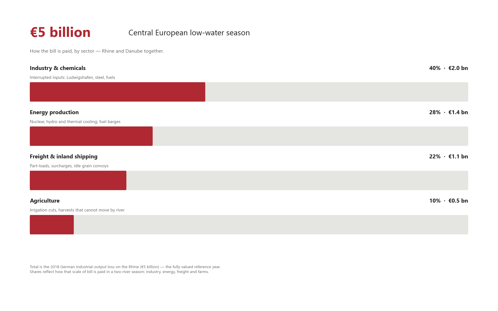

Insight · Territorial Risk
The lower levels of the Danube and the Rhine have cost €5 billion to Central Europe

When the Rhine and the Danube run low, Central Europe does not lose a landscape. It loses a working corridor. Barges cannot carry a full load. Power plants cannot cool. Grain cannot leave the farm by river. The number that has been valued for a season of this kind is about €5 billion — almost €5 billion of German industrial output lost when the Rhine ran low in 2018. That is the scale. In 2026 the Kiel Institute already puts the German third-quarter hit on the Rhine at €1–2 billion, with water at Kaub below the 2018 record. The Danube is in the same season: Paks curtailed, Cernavodă cut, barges running at 30–40% of load. The two rivers are one territorial system.
What low water actually closes
Draft is the first constraint. On the Rhine, Kaub at 78 centimetres is the operational mark: below it, barges still move, but they move light. In July 2026 some stretches were operating at as little as 20% of normal capacity. On the Danube, restrictions from early July forced vessels to 30–40% of load; surcharges could double the freight rate. The same cargo then needs more ships, more days, more fuel.
Cooling water is the second. Hungary’s only nuclear plant, Paks, uses the Danube. In 2026 the river fell so far that suction intakes could not reach it; reactors were cut, and for a time the country ran close to a full nuclear stop. Cernavodă in Romania disconnected a unit and warned that a second could follow. Kozloduy in Bulgaria was watched at an exceptionally low gauge. Serbian hydropower and coal cooling at Kostolac were squeezed in the same weeks. Fuel imports by barge ran at about a quarter of the planned volume.
The factory that does not sit on the bank still stops. Inland waterways move a small share of total German freight — about 6% — but a large share of what sits at the start of the chain: around 30% of coal, crude and gas volumes, about 20% of coking and petroleum products. Chemicals, steel and fuels arrive by river into Ludwigshafen, the Ruhr and the upper Rhine. In 2018 that interruption cost BASF about €250 million at a single site.
Agriculture is hit twice: irrigation that is restricted, and harvests that cannot move. Romania cut farm access to Danube water while holding reservoirs for Cernavodă. Grain barges stood idle on exposed sand. Cruise ships failed to reach Budapest. The backup corridor failed with the river: Hungary restricted evening rail cargo to save electricity, so the substitute for the barge was itself curtailed.
€5 billion, by the sectors that pay it
The €5 billion is the 2018 German industrial-output loss on the Rhine — the only fully valued low-water season. It is the number Central Europe should plan against. 2022 was expected to exceed it. 2026 is already booking €1–2 billion in Germany in the third quarter, plus Hungary’s Paks curtailment of about 0.1% of GDP (in the order of €200 million over a few weeks) and about HUF 50 billion in extra power imports. The chart allocates that €5 billion scale across the sectors that actually pay a two-river year.

Energy, freight, industry, farms
Energy is the Danube’s distinctive 2026 bill. Paks covers about a third of Hungarian electricity. A few weeks of curtailment took about 0.1% off GDP. Romania held canal water for Cernavodă while farmers went short. Hydropower in Serbia lost head; coal plants lost cooling and lost fuel that should have come by barge. On the Rhine the same physics hits thermal plants and the coal and oil that feed them.
Freight is the mechanism. The Rhine carries about 80% of Germany’s inland-waterway traffic — some 285 million tonnes in a normal year. In August 2022, a previous low-water month, inland volumes were 26.8% below the year before. In 2018 traditional Rhine transport fell 11%. Direct shipping losses are real. The larger invoice is the factory that cannot be supplied.
Industry pays most of the €5 billion. Kiel’s work on the Rhine is blunt: a month of low water cuts inland shipping by about 25% and industrial production by about 1%. The second half of 2018 had a peak industrial-production hit of 1.5%, or close to 0.4% of German GDP — booked as almost €5 billion of industrial output. Chemicals, mineral oils and containers were the cargoes that fell hardest.
Agriculture is the smaller share of the euro total and a large share of the territory: irrigation bans, idle grain, a harvest that misses the export window. The operational question is the same as for a plant: which farm, mill and port sit on a river that cannot take the load.

What this becomes over time
2018, 2022 and 2026 are a series, not a shock. Rhine summer flow is fed by Alpine snow and ice that are in long retreat; low-water windows lengthen. Firms have already changed the operating model: custom low-draft barges, Sunday road haulage, deeper inventories. Hungary is sinking barges and building a riverbed sill to keep Paks on the grid — a permanent structure to hold a river that no longer holds itself. Rail cannot take the tonnage, and in 2026 it was itself restricted to save power. The long-term cost is not one summer’s €5 billion. It is a climate surcharge on every tonne that used to assume the river would be there: more ships, more stock, more weirs, and power plants whose heat sink is no longer a given. The next factory and the next generating unit have to be sited against a summer river that planning still treats as the 20th-century Danube and Rhine.
The €5 billion is not a 2018 curiosity. It is the operating cost of a Central European summer in which the Rhine and the Danube cannot carry the territory they were built to serve. Maps of gauges are a starting layer. The assessment that matters places the river, the plant, the barge and the factory in the same picture — and asks which of those links the organisation cannot afford to lose twice in a decade.
Terranova Strategy
Territorial Exposure Assessment
Territorial Exposure Assessment places river gauges, energy cooling, inland freight and the plants they feed in the same territorial picture.
Explore service